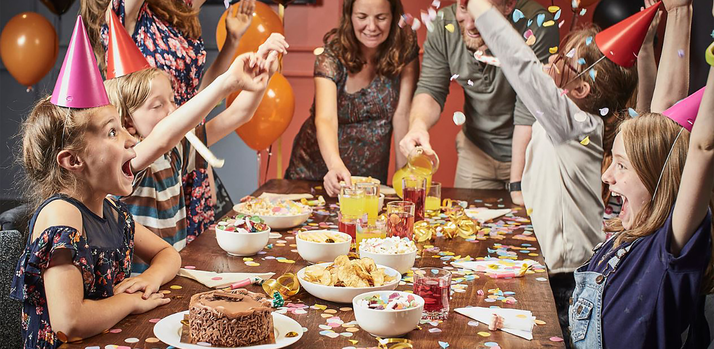

|  | High quality child care can have a positive influence on children’s development and school readiness by providing valuable educational and social experiences. High quality child care is characterized as: Having well-qualified, well-paid, stable staff, low child-adult ratios, and efficient management. Offering a program that covers all aspects of child development (physical, motor, emotional, social, language and cognitive development). Research shows also that only high quality provision can deliver well-being and appropriate development to young children. As an increasing number of mothers are in the workforce and most children ages 3 and older now attend a child care facility on a regular basis, it has become critical that young children from all backgrounds should have access to high-quality child care and early education. |